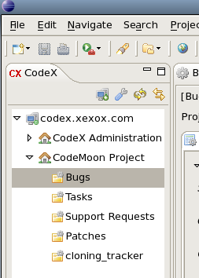

If the connexion to the server is not initiated, the server
has a red light on its icon
 .
To login to the server, just expand the server.
If you didn't store your password, it will be asked.
Once the server is connected, the icon should be green now
.
To login to the server, just expand the server.
If you didn't store your password, it will be asked.
Once the server is connected, the icon should be green now
 ,
and you should see your projects.
,
and you should see your projects.
When the server is connected, all the projects you're member of appear under the server.
|  |
You can expand each project, and you will see all the trackers of the project.
For every tracker, a double click on it will open the artifact list in another view (the "Artifact List" view, see Chapter 4). The report used is the default report. If you want to open the list with another report, just right click on the selected tracker, and select "Open artifact list with report..." and then select the report you want. You can open several trackers at the same time.
When you hover the tracker name, the number of opened artifact and the total number of artifact are displayed as a tooltip if you have the right to see it.
You also have an acces to the tracker administration. Right-click on the tracker name and select "Tracker administration". This will open the internal Eclipse browser to the administration page of the selected tracker.